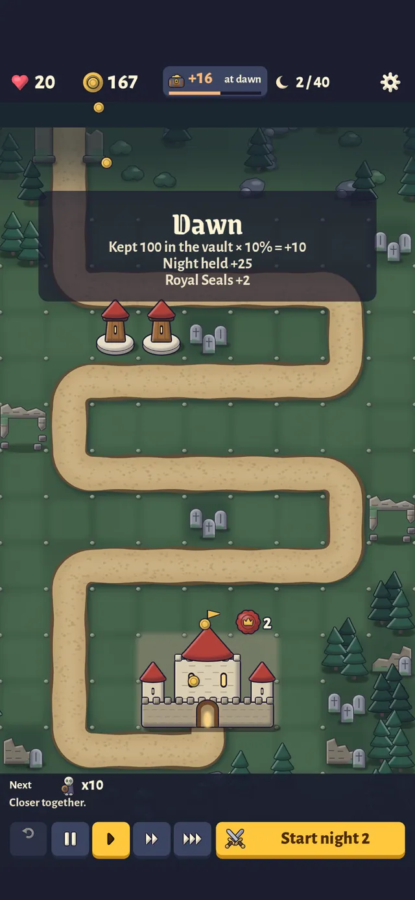

The vault
Gold you keep is a tower you chose not to build
At every dawn the King’s vault pays interest on the lowest gold you held all night. Each tower you raise is gold that stops earning, and the vault chip shows what you stand to lose as you spend.
Build what the night needs, and not a coin more.